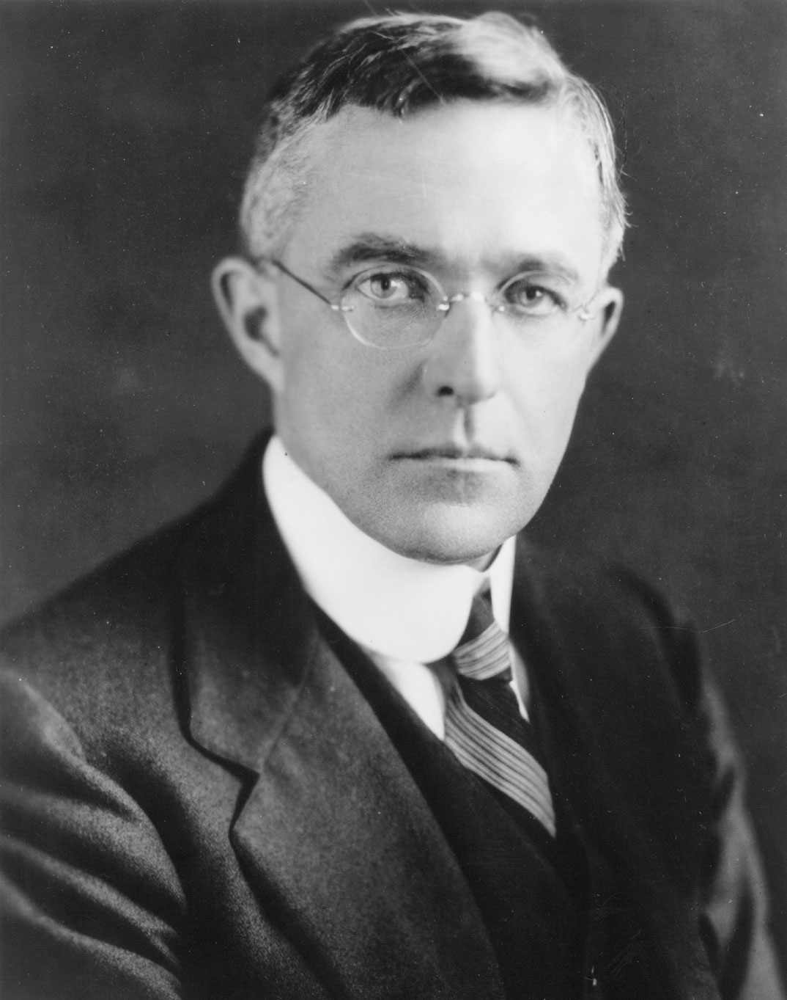
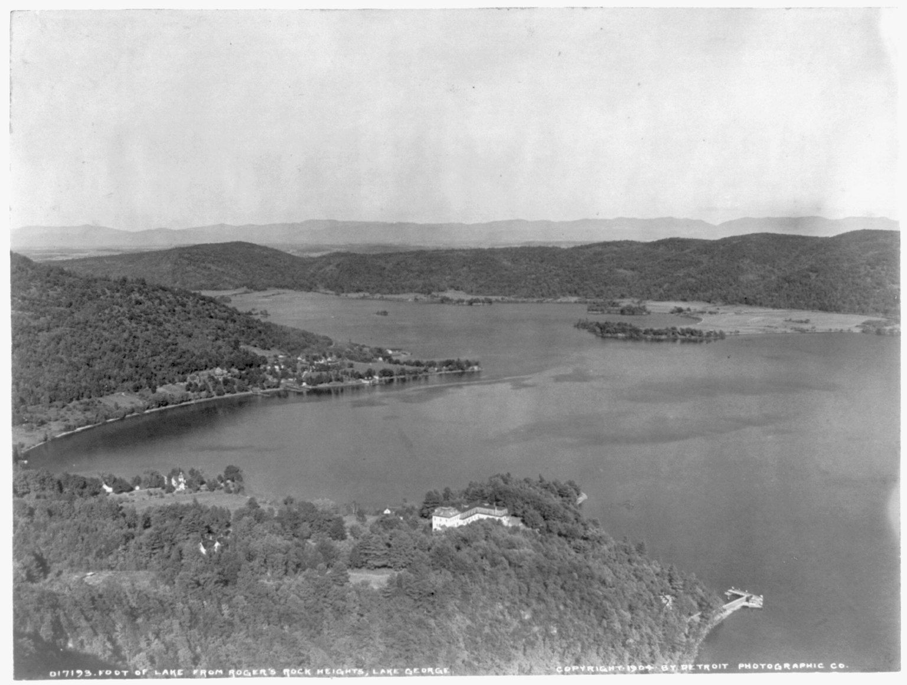
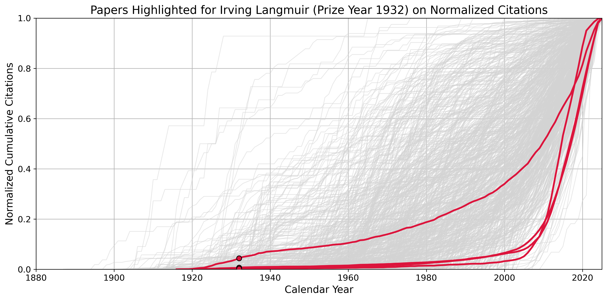
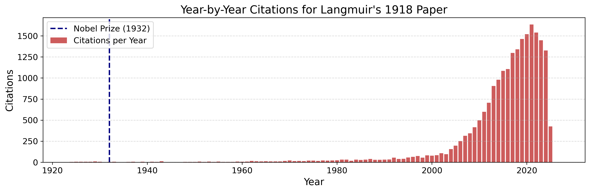
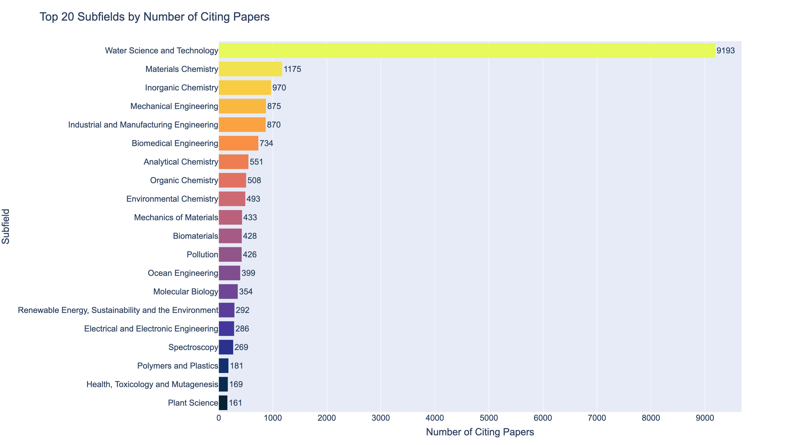
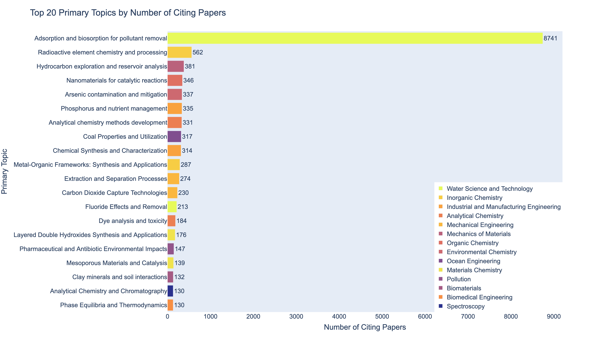
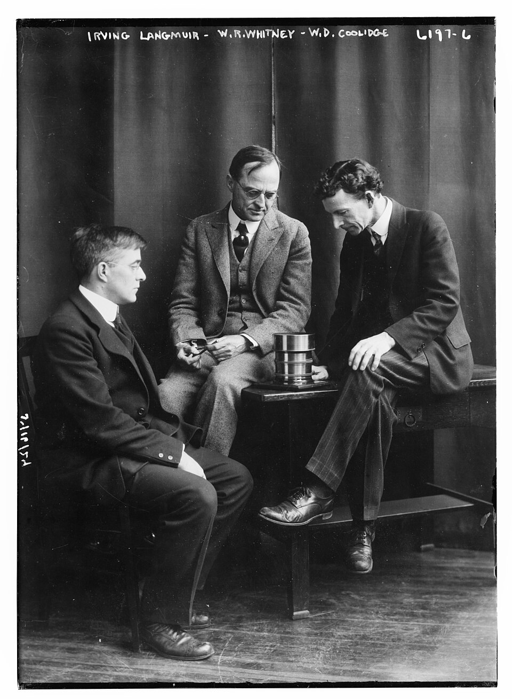
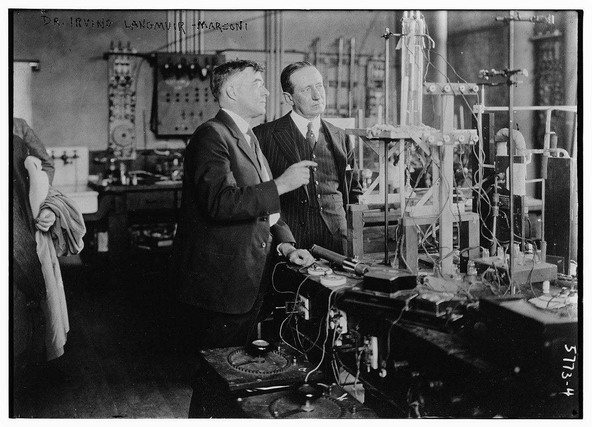
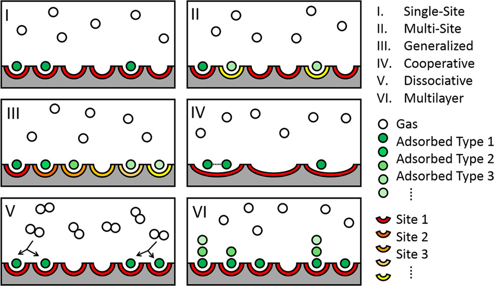

Cross-posted from my Substack newsletter
“Everything I have done, I have done for the fun of it.”
I first became interested in Irving Langmuir not through his discoveries, but through his citation history. While analyzing the long-term impact of Nobel Prize-winning research, I noticed that Langmuir’s papers had unusual trajectories: they remained lightly cited for most of the 20th century, then experienced a dramatic surge in citations starting in the early 2000s. That kind of delayed recognition, sometimes called a “Sleeping Beauty,” raised some interesting questions. What were these papers about? Why do they matter so much now? And who was this industrial chemist whose ideas were suddenly central to environmental science? This essay is the result of that curiosity: a look into Langmuir’s life, his science, and how a century-old theory found new purpose in a modern world.

Irving Langmuir won the Nobel Prize in Chemistry in 1932, but his most cited paper titled, “The adsorption of gases on plane surfaces of glass, mica and platinum,” saw the majority of its scientific impact nearly a century after publication. Over the past two decades, this once-overlooked work has become foundational in environmental science, particularly in the design of modern water purification systems. Why did a core theory in surface chemistry lie dormant for so long before rising to prominence?
Ironically, Langmuir’s own passion for environmental conservation predated this scientific influence. In 1910, long before climate change or clean water were central global concerns, he became captivated by Lake George in upstate New York. Then a young chemist at the General Electric Research Laboratory, he spent his spare time canoeing between the lake’s many islands, hauling rocks to protect their shorelines from erosion. A nearby dam caused the rise and fall of water levels in the lake beyond its natural depth, leading to erosion of the islands. This was the start of Langmuir’s decades-long effort to preserve the lake’s health.
Now, nearly a century after he began his first riprapping efforts on Lake George, Langmuir’s research into the molecular interactions at surfaces is at the heart of efforts to decontaminate polluted water around the world. The Langmuir Isotherm, a model describing how gas molecules adhere (or adsorb) to solid surfaces, has become a key tool used in designing systems that remove pollutants from drinking water.
In a previous post on citation trajectories of Nobel Prize-winning work, I highlighted Langmuir as a striking case: recognized early as groundbreaking work, yet broadly adopted only many decades later. As I dug deeper into his life and the reasons behind this delayed impact, I discovered a scientist with an unusually diverse and dynamic career. Langmuir not only founded the field of surface chemistry; he also helped invent the modern incandescent light bulb, pioneered studies of ionized gas (he coined the term “plasma”), discovered atomic hydrogen, and developed hydrogen welding. Alongside colleagues at GE, he even launched large-scale experiments in cloud seeding to make it rain.
So, how does Nobel Prize-winning science lie dormant for 70 years before being broadly adopted by a field? This essay explores the enduring impact of Irving Langmuir’s work, the story of a scientist who followed his curiosity across disciplines, and the forces that brought a century-old theory to life.

The impact of Irving Langmuir’s Nobel Prize-winning work
When I began tracking the citation counts of Nobel Prize-winning papers over time, I noticed a striking pattern: several older papers, especially those published before 1950, remained lightly cited for decades before experiencing a sudden surge in attention. These papers, sometimes called the “Sleeping Beauties” of science, are works that remain in obscurity before waking to widespread influence.
Irving Langmuir’s prize-winning papers are among the most extreme cases. In terms of delayed recognition, they stand out even among Nobel Laureates. The chart below shows Langmuir’s papers (highlighted in red) in the context of all Nobel-winning works between 1902 and 2016 (in gray). One in particular, “The Adsorption of Gases on Plane Surfaces of Glass, Mica and Platinum,” is now cited more than 21,000 times.


The case of the Nobel Prize “Sleeping Beauties” is especially revealing. These are papers that were recognized as groundbreaking at the time, yet they lingered with little attention for decades before exploding in influence. I was curious to see what caused the surge in citation counts for Langmuir’s papers.
To understand this surge in relevance, I used the OpenAlex research database to examine the fields and topics of the papers citing Langmuir’s most famous work, which is his 1918 paper on adsorption. That single paper has been cited by 21,370 papers to date. OpenAlex metadata assigns a “primary topic” to each paper, drawn from a classification system spanning over 4,500 topics1. This made it possible to trace where Langmuir’s influence is now most visible.
The results are striking. Below are two charts that show the top 20 subfields and top 20 topics associated with the papers that cite Langmuir’s 1918 paper. As the charts below show, over 43% of citing papers fall into the subfield of Water Science and Technology. Within that group, a staggering 95% are specifically focused on Adsorption and Biosorption for Pollutant Removal. Langmuir’s surface chemistry model has become a cornerstone of water decontamination research. The primary topics are color coded according to the subfield they fall into.


So, what makes the fundamental study of molecular interactions at surfaces so critical for removing pollutants from water? Why did it take 80 years for applications of Langmuir’s work to surge? And how did a man best known for inventing the gas-filled incandescent lightbulb and discovering atomic hydrogen end up winning the Nobel Prize for something entirely different?
His research intensity was akin to “the Knights of the Round Table in their quest for the sacred vessel”
Irving Langmuir was born in Brooklyn, New York, on January 31, 1881. He earned a bachelor’s degree in metallurgical engineering from Columbia University’s School of Mines in 1903, then traveled to Germany, then the epicenter of physical chemistry, to pursue a PhD at the University of Göttingen. There, he studied under Walther Nernst, of the Nernst equation from thermodynamics and a future Nobel Laureate himself.
Under Nernst’s guidance, Langmuir explored the behavior of gases around heated filaments. His early experiments focused on the formation of nitric oxide near a glowing Nernst filament—a ceramic rod used in early electric lamps. Nernst had hypothesized that the glow resulted from a chemical equilibrium between oxygen and nitrogen in the surrounding air. Although that idea proved incorrect, it set Langmuir on the path to eventually develop a much-improved and longer-lasting light bulb.
His thesis eventually turned to the dissociation of carbon dioxide near a platinum filament. This work proved unexpectedly significant. Langmuir discovered that in the thin boundary layer of gas (just a few tenths of a millimeter thick) thermal conduction, not convection, dominated heat transfer. This insight challenged prevailing assumptions and had immediate implications for vacuum technology and filament design.
Langmuir’s doctoral work laid a foundation for his later contributions to surface chemistry and plasma physics, where chemical interactions at the boundaries are important. Just as importantly, it revealed his scientific style: starting from first principles, designing simple but revealing experiments, and building theory from observation.
He completed his PhD in 1906 and returned to the U.S. to teach chemistry at the Stevens Institute of Technology. His three years there were the most frustrating of his career. As one of only three faculty members in the new department, Langmuir was overwhelmed with teaching, discouraged by uninspired students, and had little time or support for research.
In 1909, through mutual contacts, he was invited to spend the summer at the General Electric Research Laboratory. What began as a short visit became a lifelong appointment. As recounted in Langmuir: The Man and the Scientist, he pursued his research at GE “with the intensity ascribed to the Knights of the Round Table in their quest for the sacred vessel.”
The General Electric Research Laboratory: the academic freedom Langmuir yearned
The GE research laboratory was born out of GE’s strong desire to outcompete its competitors in developing a better light bulb. Light bulb technology was at its infancy: they flickered, burned out quickly, caused blackening of the bulb’s interior, and consumed large amounts of current. Despite these flaws, demand for electric lighting was rising rapidly, and GE recognized that whoever cracked the code on a durable, efficient, affordable light bulb would dominate the market.
Concerned that incremental engineering alone wouldn’t yield major breakthroughs, GE’s leadership envisioned something radical: a corporate lab focused not on production, but on scientific discovery. As one executive put it, they wanted a lab that would “search out scientific principles and act as a source of technical information for the company.” With that mandate, the GE Research Laboratory was founded in 1901 in a barn in Schenectady, New York. Free from commercial pressures, it became a place where physicists and chemists could pursue fundamental problems, guided not by directives, but by curiosity. The unofficial motto, under the lab’s director Willis Whitney, became a simple question: Are you still having fun?

This was the environment Langmuir entered in the summer of 1909. Like all new recruits, he spent his first days wandering the lab, looking for something that piqued his interest. He returned to a familiar challenge: lamps and filaments. GE had already developed a tungsten-filament bulb that improved on previous designs, but a persistent issue remained: residual gases inside the bulb caused blackening of the glass. Most believed the solution was to improve the vacuum seal. But Langmuir, skeptical of that assumption, approached the problem differently.
He found that GE’s vacuum was already far superior to any he had used during his PhD work, and instead turned to fundamental questions: How do different gases behave when exposed to a heated tungsten filament? What reactions occur inside the bulb at high temperatures? For three years, he ran meticulous experiments, chasing many dead ends but learning something new each time.
Eventually, Langmuir discovered the key: at high temperatures, the inner surface of light bulb glass itself released water vapor, which then reacted with the tungsten filament. This caused tungsten atoms to evaporate, travel through the bulb, and deposit onto the glass, resulting in the blackening. The problem wasn’t the vacuum; it was the temperature-dependent chemistry of the materials inside the bulb.
In parallel, Langmuir tested how different gases behaved under heat. He found that hydrogen dissociated into atoms when heated (discovering atomic hydrogen), while nitrogen remained stable. Introducing nitrogen into the bulb dramatically reduced tungsten evaporation and therefore blackening. These experiments led to the invention of the gas-filled incandescent lamp, a major leap forward in lighting technology.

But the implications of that work reached far beyond lamps. Along the way, Langmuir discovered atomic hydrogen, laying the groundwork for hydrogen welding. He also began investigating how these reactive hydrogen atoms adhered to glass surfaces, and noticed that they formed a single atomic layer. This insight sparked his interest in adsorption and led to his work in surface chemistry, for which he would eventually win the Nobel Prize.
Langmuir credited the freedom he had at the GE lab for making these discoveries possible. After three years on the tungsten problem, the lab’s director, Willis Whitney, asked his usual question: “Are you having fun?” Langmuir replied, “I’m having a lot of fun, but I don’t know what good this is to the General Electric Company.” Whitney simply responded, “That’s not your worry, it’s mine.”
Unlike academia or other industrial labs of the time, Langmuir wasn’t assigned a research program. Whitney provided the equipment, the staff, and, most importantly, the freedom to follow his own questions. GE, in return, reaped enormous benefits, not just in patents and products, but in foundational science. Langmuir came to believe that industry had a responsibility to support basic scientific research, “regardless of any payoff in profits, because of the debt which all industry owed to science for its very existence.”
Langmuir’s curiosity about hydrogen atoms adhering to the inside of the glass bulb soon expanded into a broader question: how do molecules behave at surfaces? That question would take him far beyond light bulbs and into the foundation of the new scientific field of surface chemistry.
Adsorption: the flatland of the chemical world
Adsorption is the accumulation of atoms or molecules from a gas or liquid onto the surface of a solid or liquid. It is a surface-specific phenomenon, unlike absorption, in which substances penetrate into the bulk of a material. In adsorption, the adsorbate clings to the adsorbent’s surface, forming a layer that is typically only one molecule thick.
Interest in surface phenomena dates back to the 18th century. Benjamin Franklin experimented with how oil spread across water to study wakes left by ships. Michael Faraday explored the distinct physical forces at play at surfaces, separate from those inside the bulk of materials. In the late 19th century, Lord Rayleigh, building on Franklin’s work, used oil films to demonstrate that molecules have a definite size and shape. Willard Gibbs then introduced a thermodynamic framework, the Gibbs adsorption isotherm, to describe how concentration at a surface changes with chemical potential.
Still, by the early 20th century, adsorption remained poorly understood and largely based on empirical evidence. Most scientists believed it to be a diffuse, gradual, multilayer process, akin to the way Earth retains its atmosphere. Only Rayleigh had proposed that adsorption might involve a single molecular layer, but his idea lacked theoretical support.
Langmuir’s experiments with hydrogen in light bulbs changed that. He observed that hydrogen atoms adhered to the inner glass surface in a single layer. Influenced by emerging ideas in X-ray crystallography and molecular bonding, he wasn’t surprised by the regularity. Across a variety of gases and surfaces, he consistently found the same: atoms packed tightly into a stable monolayer that required significant energy to dislodge.
This led him to propose a new idea: adsorption is a chemical process, not merely a physical one. Instead of weak physical forces or fields extending from the surface, Langmuir argued that adsorbed atoms form actual chemical bonds with the surface itself. This view contrasted sharply with the prevailing physics-based models of his time. As he later wrote:
“The older views on adsorption are now often referred to as constituting a physical theory of adsorption, whereas the newer ideas are described as a chemical theory. I think this distinction involves not so much the nature of the forces involved as the traditional attitude of mind of physicists and chemists. The physicist, probably ever since the time of Newton, has been inclined to consider forces which vary as some power of the distance between the bodies acted upon by the forces. He has also had many occasions to consider fields of force which extend throughout space, such as gravitational, electric, and magnetic fields. The chemist, on the other hand, has nearly always considered that chemical action between molecules or atoms takes place only when they are in contact. It is a natural tendency for the physicist in considering the problem of adsorption to think of the behavior of the adsorbed atoms or molecules as being in a field of force produced by a solid or liquid surface. It would be more in accord with the tradition of the chemist, however, to think of an atom on the surface as being attached to one or more atoms of the underlying surface.”
Langmuir pictured adsorption through chemical bonds and reasoned that because bonds between two different materials, i.e. at the surface, will be different from the bonds of the second layer, which are between the atoms of the same substance and not at the interface, adsorption is monomolecular.
This insight launched his exploration of monolayers, including films on water surfaces. Through careful experimentation, he showed that a surface can hold only a fixed quantity of atoms before reaching saturation. From this, he derived the Langmuir Isotherm, a mathematical relationship between the pressure of a gas and the quantity adsorbed on a surface.
Langmuir extended his studies across many surfaces and compounds, even exploring the behavior of proteins and enzymes. His deep understanding of molecular interactions at surfaces led to the “Principle of Independent Surface Action,” allowing him to predict chemical behavior based solely on molecular structure.
Much like the fictional inhabitants of Flatland, who lived in a world of two dimensions, Langmuir immersed himself in the chemistry of surfaces: thin, invisible planes where entirely new rules applied. His pioneering work opened up a new field of surface chemistry and in 1932, he was awarded the Nobel Prize in Chemistry for his contributions.
The impact of Irving Langmuir’s Nobel Prize-winning work
While Langmuir essentially began the field of surface chemistry, this part of his work, although foundational, only had a modest impact in the few decades following its publication. Surface science was still an esoteric and messy field. That began to change with the rise of the environmental sciences and the urgent need for better tools to address pollution and resource management. Langmuir’s isotherm, once a theoretical model grounded in first principles, found renewed relevance as a practical tool.
An isotherm is a mathematical relationship describing how two variables, such as pressure and surface coverage, relate at constant temperature. Langmuir’s version, now known as the Langmuir isotherm, models how molecules adsorb to a solid surface in a single layer. It assumes a finite number of identical adsorption sites with no interaction between molecules. The equation is simple but powerful: θ = (K P) / (1 + K P), where θ is the fraction of occupied sites, P is the pressure, and K is the equilibrium constant. This was the first quantitative theory of surface adsorption, and it remains the most widely used.

The Langmuir isotherm is critically important for applications of molecular separation and storage technologies because it provides a quantitative framework for understanding how molecules selectively bind to surfaces. This principle is central to processes like gas purification, water filtration, and chemical separation. In systems such as activated carbon filters, the Langmuir model helps determine how much of a contaminant can be captured at a given concentration. For gas storage, such as hydrogen or carbon capture, the isotherm informs how efficiently porous materials can hold gases under specific conditions. Its simplicity and theoretical grounding make it ideal for optimizing material design, surface area, and process conditions.
Today, modern materials with intricate porous nanostructures, such as metal-organic frameworks and graphene-based composites, dominate storage and separation systems since they have significantly more efficient adsorption properties. Yet Langmuir’s model, developed for flat surfaces, remains the standard. It is often preferred over more empirical alternatives like the Freundlich isotherm, which lacks a clear molecular interpretation and cannot easily predict adsorption behavior.
The Langmuir isotherm has guided the development of zeolites, crystalline aluminosilicates used in water purification and petrochemical catalysis; magnetite-graphene composites, which remove heavy metals like arsenic and lead from drinking water; and even pharmaceutical formulations, where it helps determine dose-response dynamics of drug binding.
Langmuir’s adsorption model is simple, grounded in theory, capable of predicting adsorption properties of materials, and applicable to a wide variety of materials and surfaces. Langmuir certainly had an eye for applications throughout his research career, and he is most well-known for some of the applications his research yielded, such as the gas-filled light bulb and hydrogen welding. In a 1939 film, he demonstrated how surface chemistry could be used to understand proteins and biological membranes. Yet even he might not have imagined that his work would become central to delivering clean water around the world.
The man who once hauled rocks by canoe to protect a single lake now, a century later, provides a conceptual foundation for purifying water on a global scale.
Footnotes
OpenAlex classifies papers into domains, fields, subfields, and topics. The domains, fields, and subfields are from Scopus’ All Science Journal Classification (ASJC) system. Topics are generated within subfields using an automated system that takes into account the title, abstract, journal name, and citations. There are around 4,500 topics in the OpenAlex database. To understand the methods, accuracy, and limitations of their topic modeling see here.↩︎